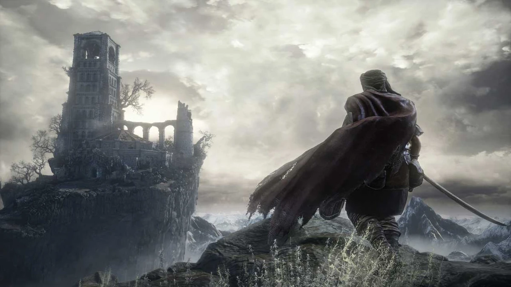
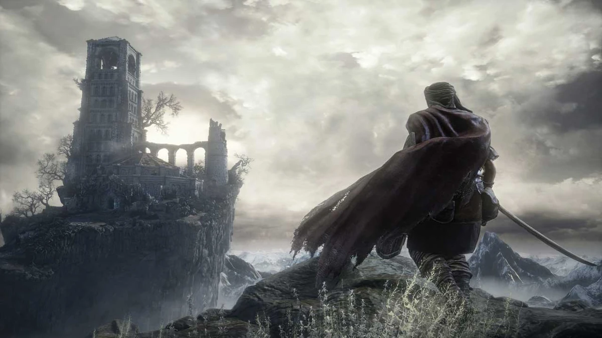

Gamescom 2015 "En İyi RPG" ödülü ve 35'in üzerinde E3 2015 Ödülü ve Adaylığı kazanan DARK SOULS™ III, tarz belirleyen, olumlu yorumlar almış serisinin bu sonuncu ve tutkulu bölümünde sınırları zorlamaya devam ediyor.
Ateşler sönüp dünya yıkıma uğrarken daha büyük düşmanlarla ve ortamlarla dolu bir evrene git. Oyuncular, daha hızlı bir oyun ve daha yoğun bir savaş deneyimiyle destansı bir atmosfere girecek. Hem eski hayranlar hem de yeni oyuncular, sürükleyici bir oyuna ve grafiklere boğulacak.
Artık sadece amberler var... Kendini bir kere daha hazırla ve Karanlığı Kucakla!
FromSoftware’ın ödüllü aksiyon-RPG serisinin destansı finali olan Dark Souls III, oyuncuları karanlık bir fantezi dünyasında unutulmaz bir maceraya sürüklüyor. Hidetaka Miyazaki'nin yönettiği bu oyun, derin hikayesi, zorlu savaş mekanikleri ve karanlık atmosferiyle oyunculara eşsiz bir deneyim sunuyor.
Lothric'in çürüyen krallığında, kül olmuş kahramanların kaderini öğrenirken, devasa haritaları keşfedecek, ölümcül düşmanlarla savaşacak ve epik boss dövüşlerine gireceksiniz. Her köşe başında ölümle yüzleşmek, sizi daha stratejik düşünmeye ve her zaferin değerini anlamaya zorlayacak.
Çok yönlü karakter özelleştirme, derinlemesine RPG mekanikleri ve eşsiz görsellerle, Dark Souls III sadece bir oyun değil; zorluğu ve ödülleriyle sizi test edecek bir yolculuk. Cesaretinizi toplayın ve bu karanlık dünyada kendi izinizi bırakmaya hazır olun. Küller, asla huzur içinde yatmaz!
Çevrimiçi çok oyunculu moduyla, arkadaşlarınızla birlikte düşmanların üstesinden gelebilir ya da diğer oyuncularla rekabet edebilirsiniz. Her seçim, hikayenin gidişatını ve karakterinizin kaderini etkiler. Dark Souls III’te yalnızca güçlü dövüş yetenekleri değil, sabır, dikkat ve analiz becerileri de hayatta kalmanın anahtarıdır.
Etkileyici müzikleri, atmosferik tasarımı ve sürükleyici anlatımı ile Dark Souls III, sizi ekran başına bağlayacak. Cesaretiniz ve aklınız, bu unutulmaz deneyimde en güçlü silahınız olacak. Bu karanlık dünyaya adım atmaya hazır mısınız?